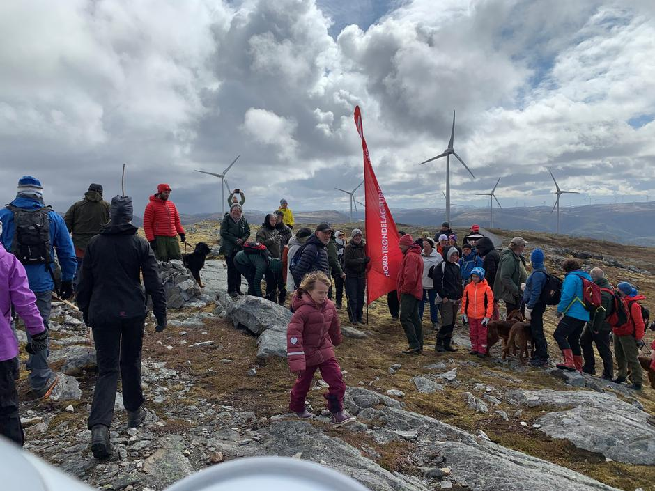

There exists a well-known Swedish song from my childhood. It begins like this:
Lyckliga gatan, du finns inte mere
Du er försvinnen med hela kvarteret ...
In English the meaning would be:
Oh Happy Street of my Childhild you no more exits
You are now gone together with the whole quarter ...
The lyrics profondly catches the sorry mood of someone experiencing the arrival of the ‘Development Machine’ in their neigbourhood.
The time of writing was the 1960s with rapid urbanzation knocking down happy shanty neigbourhoods bringing ‘modernization’ - freeways and highrise.
Hit by Development
People have been ‘hit by development’ in this way for as long as capitalism has existed. It all started with the expulsions from common land - driving people off their rural livelihood towards waged labour in the new industrial cities in England a couple of centuries ago.
And it still goes on …
While the 1960s had the urbanization craze, the current development craze is ‘Green Growth’. After the ‘economic growth machinery’ destroyed the atmosphere by CO2-pollution, global warming has forced governments to require ‘Clean Growth’ or ‘Green Growth’ - still Growth, but no more pouring out climate gases.
At the core is the transition of electricity production from coal/oil/gas to wind/solar and other renewable sources. You can burn oil and gas at any time, but the wind and sun are erratic sources. To ensure continous supply energy storage is required. For short-duration energy storage batteries are the core option and among batteries lithium-ion is the dominant technology of today.
Lithium is mostly produced in mines in Australia, Chile and China. Europe has no lithium production of it’s own. The EU sees that as a strategic deficit - and are eagerly wanting some supply’s of its own.
Unhappy Portugal hit …
Portugal has some lithium ore sites, and a British mining company has acquired the rights to develop the mine. But the local farming community don’t want development - not even the promise of 200 new jobs can get them hooked. As one of the farmers say: We don’t want to be excavated and polluted for the reason of Europeean cities to be cleaner.
The full story here
Unhappy Sierra Leone hit …
Sierra Leone has beautiful beaches, national parks and thriving local fisheries. But someone is out to ‘destroy pristine rainforest, plunder fish stocks and pollute fish breeding grounds and several ecosystems’ - guess who?
DEVELOPMENT! This time disguised by Chinese wanting to build a suitable landing port for “tuna and other bigger fishing” vessels exporting to international markets.
The gold and black sands of Black Johnson beach fringe the African nation’s Western Area Peninsula national park, home to endangered species including the duiker antelope and pangolins. The waters are rich in sardines, barracuda and grouper, caught by local fishermen who produce 70% of the fish for the domestic market.
The $55m deal struck by the government of Sierra Leone with China to build an industrial fishing harbour on 100 hectares (250 acres) of beach and protected rainforest has been criticised as “a catastrophic human and ecological disaster” by conservationists, landowners and rights groups.
The full store [here](Guardian
Unhappy Norway hit …
Norway has been a latecomer to wind-power exploitation. As most of Norway’s power production is hydro-based and thus already renewable, there has simply not been a need for wind, before now …
New large scale electricity connection cables to neigboring countries (UK, Sweden, Denmark) has opened up for unlimited electricty production - and someone wants to make profits. So wind-power has come into the wind - even if Norwegians themselves do not need it.
So international wind capital has arrived also in Norway - whereever the wind blows a windmill can be put up. However, resistance is increasing: A survey found that 42 pct of population did not want onshore windmills, up from 25 pct previous year. 2 of 3 is against windmills in nature.

Picture: Mobilization against Wind Mill Development
The Devil in Development
‘Development’ has become synonymous with ‘Capitalistic Development’.
The economy must grow! We need jobs! We cant live from fish and farming alone!
The argument list is long - so the unhappy people located near any exploitable resource have no chance of stopping the ‘Development Machine’. Protest, yes - but in the end ‘Development’ always wins - even if new pollution and nature destruction is part of play.
The devil in development is capitalism.
Our capability to think beyond capitalism is not great!
The resistance we can see everywhere, however, is a potential.